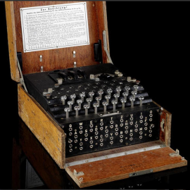
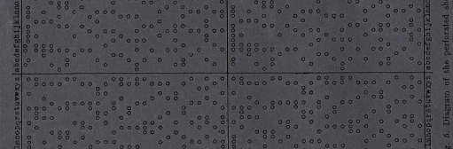
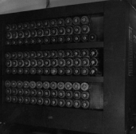
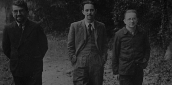
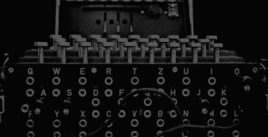
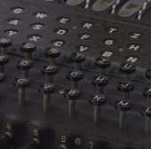
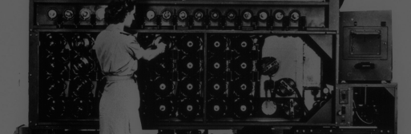

Enigma
Enigma to maszyna szyfrująca opracowana w latach 20
XX wieku przez niemieckiego inżyniera Artura Scherbius’a, jej prezentacja odbyła się w 1923, i już po 3
latach, w roku 1926 została ona przyjęta do produkcji jako wyposażenie okrętów kriegsmarine. Powstało
łącznie 13 wersji enigmy, zarówno wersje cywilne przeznaczone do handlu jak i wersje wojskowe które były na
wyposażeniu nie tylko armii niemieckiej ale także innych państw, między innymi Włoch, Szwecji czy Japonii.
Uważana za niemożliwą do złamania, została rozpracowana przez zespół polskich matematyków już w 1932 roku.

Płachty Zidkygalskiego
Jedno z pierwszych narzędzi pomagających w odczytywaniu szyfrogramów
enigmy

Bomba Turinga
Maszyna służąca do rozszyfrowywania wiadomości zakodowanych przez
enigmę.

15 x 10^18
To ilość możliwych kombinacji szyfrów używanych przez enigmę.

Do dwóch dni
Tyle pod koniec wojny mogło trwać odszyfrowywanie niemieckiego
meldunku, pomimo wykorzystania “bomby Turinga”.

13
Tyle wersji enigmy było używanych przez różne państwa.

ULTRA
Był to brytyjski kryptonim enigmy, nadany ze względu na stopień
tajności operacji rozszyfrowania enigmy jakim był Most Secret.

Szyfrowanie enigmy
I dlaczego było ono tak trudne do złamania
Sposób szyfrowania enigmy różnił się od typowych szyfrów tym, że ta sama litera w dalszej części szyfru
mogła dostać inną literę na podmianę na przykład, jeśli chcielibyśmy zaszyfrować Słowa
OKRET WOJENNY
przy użyciu starego szyfru cezara, który polegał na przesunięciu liter w alfabecie o ileś miejsc jako
przykład załóżmy, że o 4 to dostajemy słowa SOVIX ASNIRRC
taki szyfr był prosty do złamania ponieważ przy dłuższym meldunki gdzie napisane jest wiele słów
wystarczyło znaleźć litere, która najczęściej pojawia się w danym języku i w ten sposób podmieniać
powoli litery aż dostanie się odszyfrowaną wiadomość w enigmie za to zaszyfrowanie OKRET WOJENNY dałoby
inny wynik zależnie od ustawienia bębenków.